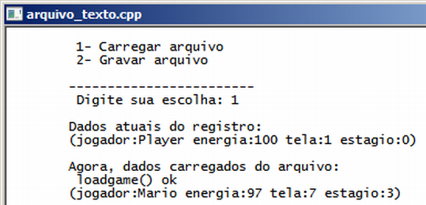
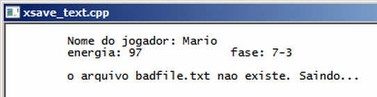
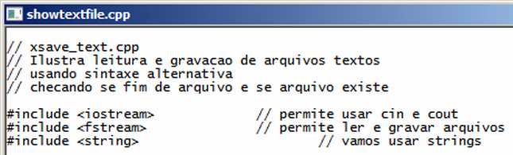

Curso completo de linguagem C++
Gameprog - Escola de programação de jogos digitais
Contato: gameprog.br@gmail.com
track20.html
20. Lendo e escrevendo em arquivos textos
20.1 Visão geral
Neste capítulo você vai aprender como manipular arquivos textos para leitura
e gravação. Geralmente vai surgir na sua experiência de programação a
necessidade de ler e gravar informação em arquivos texto, por exemplo,
gravar e ler dados de configuração do seu programa, dados das variáveis para
rastreamento de erros entre muitas outras finalidades.
Nosso programa ilustra leitura e gravação de dados de status de um jogo,
processo usado tipicamente quando o jogador decide parar de jogar mas
quer salvar o seu progresso para continuar mais tarde.

// arquivo_texto.cpp
// Ilustra leitura e gravação de arquivos textos
#include <iostream> // permite usar cin e cout
#include <fstream> // permite ler e gravar arquivos
#include <string> // vamos usar strings
#include <cstdlib> // vamos gerar valor de energia aleatório
#include <ctime> // vamos gerar valores aleatorios sempre diferentes
using namespace std;
// ****************** classe Config para dados de configuração do jogo ********
class Config {
public:
int m_fase;
int m_estagio;
int m_energia;
string m_nome;
// Nosso construtor
Config (int fase = 1, int estagio = 0, int hp = 100, string snome = "Player")
{
m_fase = fase;
m_estagio = estagio;
m_energia = hp;
m_nome = snome;
} // ::Config().end
// Mostra dados de status do jogo
void mostrar()
{
char txt[255];
sprintf (txt, "\t(jogador:%s energia:%d tela:%d estagio:%d)",
m_nome.c_str(), m_energia, m_fase, m_estagio);
cout << txt << "\n";
} // ::mostrar().end
// Resseta para os valores originais os dados de status do jogo
void reset()
{
m_fase = 1;
m_estagio = 0;
m_energia = 100;
m_nome = "Player";
} // ::reset().end
}; // fim da classe config
// --------------------------------------------------------------------------
// Protótipo das nossas funções básicas
void inicio();
int menu();
void savegame (Config &cfg, string snome_arquivo);
void loadgame (Config &cfg, string snome_arquivo);
void mostra(Config &cfg);
void fim();
// -------------------- inicio da funcao principal ---------------------------
int main() {
inicio();
int nEscolha;
const int carregar = 1;
const int gravar = 2;
Config jogo_situacao (7,3,45, "Mario");
// gera um valor aleatorio na faixa 0-100 diferente a cada rodada do programa
srand (time(0));
jogo_situacao.m_energia = rand() % 100;
nEscolha = menu();
if ( nEscolha == gravar) {
savegame(jogo_situacao, "savegame.txt");
jogo_situacao.mostrar();
} // endif gravando dados no disco
if ( nEscolha == carregar) {
jogo_situacao.reset();
cout << "\n\tDados atuais do registro: \n";
jogo_situacao.mostrar();
cout << "\n\tAgora, dados carregados do arquivo: \n";
loadgame(jogo_situacao, "savegame.txt");
jogo_situacao.mostrar();
} // endif carregando dados do disco
fim();
} // endmain
// ************ Implementação das funções definidas *************************
void inicio() {
system("color f0"); system("title arquivo_texto.cpp");
cout << "\n";
} // fim da funcao inicio()
void fim() {
cout << "\n"; system("pause");
} // fim da funcao fim()
// --------------- n = menu() gera um menu de escolhas -----------------------
int menu() {
int nEscolha = 0;
string txt_carregar = "\t 1- Carregar arquivo \n";
string txt_gravar = "\t 2- Gravar arquivo \n";
string txt_escolher = "\n\t------------------------ \n\t Digite sua escolha: ";
cout << txt_carregar;
cout << txt_gravar;
cout << txt_escolher;
cin >> nEscolha;
return nEscolha;
} // fim da funcao menu()
// --------------- savegame() - grava no disco configuração do jogo ----------
void savegame (Config &cfg, string snome_arquivo)
{
ofstream hfile;
hfile.open(snome_arquivo.c_str());
hfile << cfg.m_nome << "\n";
hfile << cfg.m_energia << "\n";
hfile << cfg.m_fase << "\n";
hfile << cfg.m_estagio << "\n";
hfile.close();
cout << "\n \t savegame() ok" << "\n";
} // savegame().fim
// --------------- loadgame() - grava no disco configuração do jogo ----------
void loadgame (Config &cfg, string snome_arquivo)
{
ifstream hfile;
hfile.open(snome_arquivo.c_str());
hfile >> cfg.m_nome;
hfile >> cfg.m_energia;
hfile >> cfg.m_fase;
hfile >> cfg.m_estagio;
hfile.close();
cout << "\t loadgame() ok" << "\n";
} // loadgame().fim
Bibliotecas
<fstream> Esta é a biblioteca que você deve incluir para utilizar processos
de leitura e gravação de dados em arquivos no disco ou pendrive.
<cstdlib> Desta biblioteca aproveitamos as funções rand() e srand()
para gerar um valor aleatório para a propriedade m_energia da situação do
nosso jogo.
<ctime> Desta biblioteca aproveitamos time() para prover rand() da
capacidade de gerar números aleatórios diferentes a cada execução do programa.
A classe Config
A classe Config gera objetos contendo dados da situação do jogo: basicamente
o nome do jogador, o quanto de energia que ele tem e aonde ele está: fase e
subfase.
A classe contém o método .mostrar() para exibir a configuração dessa situação,
e contém o método .reset() para reconfigurar as propriedades com seus valores
originais do início do programa.
| PROPRIEDADES | MÉTODOS |
|---|
string m_nome
nome do jogador | .mostrar()
Mostra os dados de configuração |
int m_energia
energia/saúde do jogador | .reset()
Resseta os dados de configuração para valores originais |
int m_fase
fase principal | Config (fase, subfase, energia, nome)
Construtor da classe |
int m_estagio
subfase da tela principal | *** |
Gravando dados no arquivo savegame.txt
void savegame (Config &cfg, string snome_arquivo);
Nesse protótipo definimos que nossa função de gravação
savegame() vai receber
a referência de um objeto Config (
&cfg) e um nome de um arquivo estocado em
uma string c++ (
snome_arquivo).
O processo de gravar dados em arquivos segue essa sequência:
1) criar um objeto arquivo da classe
ofstream;
2) abrir o objeto arquivo;
3) configurar os dados a serem gravados nas variáveis;
4) gravar os dados com o objeto arquivo junto com o operador de inserção <<
5) fechar o arquivo.
Vejamos agora como implementar essas sequências com o c++.
1) criar um objeto arquivo:
ofstream objArquivo;
ofstream hfile;
2) abrir o objeto arquivo:
objArquivo.open("nome_arquivo.txt");
hfile.open(snome_arquivo.c_str());
* Note que o método
.open( char *sn) do objeto ofstream aceita como argumento
apenas o tipo c-string ( char *sn) por isso utilizamos
.c_str() que retorna
nossa string c++ como uma c-string.
3) configurar os dados a serem gravados nas variáveis:
int idade = 14;
Config jogo_situacao (7,3,45, "Mario");
jogo_situacao.m_energia = 97;
4) gravar os dados utilizando o objeto arquivo com o operador de inserção <<:
objArquivo << idade << "\n";
hfile << cfg.m_nome << "\n";
hfile << cfg.m_energia << "\n";
hfile << cfg.m_fase << "\n";
hfile << cfg.m_estagio << "\n";
5) fechar o arquivo:
objArquivo.close();
hfile.close();
Eis aqui nossa função completa para uma olhada na íntegra:
// --------------- savegame() - grava no disco configuracao do jogo ----------
void savegame (Config &cfg, string snome_arquivo)
{
ofstream hfile;
hfile.open(snome_arquivo.c_str());
hfile << cfg.m_nome << "\n";
hfile << cfg.m_energia << "\n";
hfile << cfg.m_fase << "\n";
hfile << cfg.m_estagio << "\n";
hfile.close();
cout << "\n \t savegame() ok" << "\n";
} // savegame().fim
* Note que no final há o avanço de linha "\n", gravando assim cada tipo de
dado em uma linha diferente do arquivo, procedendo dessa forma fica mais
fácil para ler de volta os dados. Você deve observar a ordem na qual
você está gravando os dados para depois lê-los também na mesma sequência.
Lendo dados do arquivo savegame.txt
void loadgame (Config &cfg, string snome_arquivo);
Nesse protótipo definimos que nossa função de leitura
loadgame() vai receber
a referência de um objeto Config (
&cfg) e um nome de um arquivo estocado em
uma string c++ (
snome_arquivo).
O processo de ler dados de arquivos segue essa sequência:
1) criar um objeto arquivo da classe
ifstream;
2) abrir o objeto arquivo;
3) declarar variáveis para receberem esses dados;
4) ler os dados com o objeto arquivo junto com o operador de extração >>
5) fechar o arquivo.
Veja nossa função:
// --------------- loadgame() - grava no disco configuracao do jogo ----------
void loadgame (Config &cfg, string snome_arquivo) {
ifstream hfile;
hfile.open(snome_arquivo.c_str());
hfile >> cfg.m_nome;
hfile >> cfg.m_energia;
hfile >> cfg.m_fase;
hfile >> cfg.m_estagio;
hfile.close(); } // loadgame().fim
20.2 Sintaxe alternativa de abertura de arquivo e verificações importantes
20.2.1 Sintaxe curta de abertura de arquivo
No código acima abrimos nosso arquivo dessa forma:
ifstream hfile;
hfile.open("savetext.txt");
Estas duas linhas podem ser resumidas para esta forma:
ifstream hfile("savetext.txt");
Na abertura do arquivo para gravação de dados o mesmo pode ser feito:
ofstream hfile("savetext.txt");
20.2.2 Verificando problema de arquivo
Se houver problema na abertura do arquivo para leitura ou gravação, o objeto
ifstream/ofstream é convertido para um tipo bool e retorna valor falso.
É importante sempre fazer esta verificação antes de tentar leitura e
gravação de dados. Em nosso exemplo, esssa verificação pode ficar dessa
forma:
if (!hfile) {
cout << "Erro na abertura do arquivo. Saindo do programa... \n";
return -1; }
20.2.3 Verificando fim de arquivo
Outra verificação importante é a de fim de arquivo que é realizada através
do método
.eof() do objeto
ifstream/ofstream. Com muita frequência você vai
pegar arquivos aonde o volume de dados é desconhecido e geralmente você
vai utilizar uma estrutura de looping
while para acessar todos esses dados.
Você pode implementar uma leitura de grandes arquivos dessa forma:
while (!hfile.eof()) {
// leia os dados
// use os dados
} // fim do while
Veja agora nosso programa exemplo xsave_text.cpp que ilustra o que dissemos acima:

// xsave_text.cpp
// Ilustra leitura e gravação de arquivos textos
// usando sintaxe alternativa
// checando se fim de arquivo e se arquivo existe
#include <iostream> // permite usar cin e cout
#include <fstream> // permite ler e gravar arquivos
#include <string> // vamos usar strings
using namespace std;
// -------------------- inicio da função principal ---------------------------
int main() {
system("color f0"); system("title xsave_text.cpp"); cout << "\n";
// Declarando variáveis
int fase;
int subfase, energia;
string sjogador;
// abrindo o arquivo...
ifstream hfile("savegame.txt");
// O arquivo existe?
if (!hfile) {
cout << "erro na abertura do arquivo. Saindo... \n";
system("pause");
return -1;
} // endif
// Lendo os dados...
while (!hfile.eof()) {
hfile >> sjogador;
hfile >> energia;
hfile >> fase;
hfile >> subfase;
} // endwhile
// mostrando os dados
cout << "\t Nome do jogador: " << sjogador << "\n";
cout << "\t energia: " << energia << "\t";
cout << "\t fase: " << fase << "-" << subfase << "\n\n";
// fechando o arquivo
hfile.close();
// Aproveitando o mesmo object ifstream para teste de arquivo inexistente
hfile.open ("badfile.txt");
if (!hfile) cout << "\t o arquivo badfile.txt nao existe. Saindo... \n\n";
hfile.close();
cout << "\n"; system("pause");
} // endmain
Veja agora outro programa exemplo que carrega e mostra totalmente um arquivo
texto. O destaque para este programa é para
getline(hfile, slinha); que
lê uma linha completa do arquivo e estoca-a na
string slinha.

// showtextfile.cpp
// Ilustra leitura e gravação de arquivos textos
// usando sintaxe alternativa
// checando se fim de arquivo e se arquivo existe
#include <iostream> // permite usar cin e cout
#include <fstream> // permite ler e gravar arquivos
#include <string> // vamos usar strings
using namespace std;
// -------------------- inicio da função principal ---------------------------
int main() {
system("color f0"); system("title showtextfile.cpp"); cout << "\n";
// Declarando variáveis
string slinha;
// abrindo o arquivo...
ifstream hfile("xsave_text.cpp");
// O arquivo existe?
if (!hfile) {
cout << "erro na abertura do arquivo. Saindo... \n";
system("pause");
return -1;
} // endif
// Lendo os dados...
while (!hfile.eof()) {
getline (hfile, slinha);
cout << slinha << "\n";
} // endwhile
// fechando o arquivo
hfile.close();
cout << "\n"; system("pause");
} // endmain